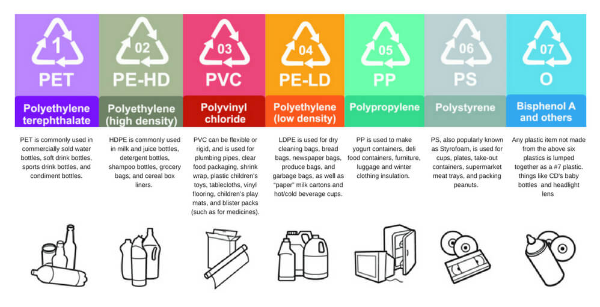
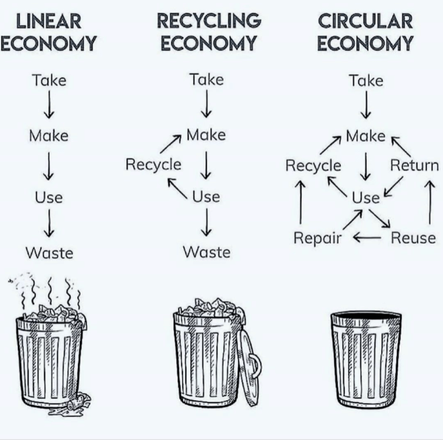

bakelite is widely considered to be one of the earliest synthetic plastic materials invented. leo baekeland was responsible for this in 1907. he is also credited with coming up with the term ‘plastics.’ but it was not until after world war ii that plastic became popular among consumers. this versatile material found applications in nearly every industry, making manufacturing processes cheaper and easier. Thanks to the convenience and affordability of plastic, it started entering our homes as an easy solution and, soon enough, became embedded into our daily lives.
today, we struggle with the issue of plastic waste disposal and management. the problem with plastic is that it is a synthetic substance created in manufacturing plants and, so, it does not degrade by natural methods of
decomposition. recycling has often been presented as the ultimate solution for this issue. we would all love it to be, but the situation is not as straightforward as it seems!
here are three eye-opening facts about plastics that show that recycling is only part of the solution.
many of us who are looking to do our bit for the environment faithfully dunk plastics into the recycling bin. but not all plastic can be recycled. there are various forms (or grades) of plastic used today, made up of different
compositions. once the plastic waste is segregated further, only those grades that are bought by plastics recyclers go on to live a second life as a new product.
a lot of our plastic bags and single-use plastics cannot be recycled.
“i think the best global estimate is maybe we’re at 20% [per year] globally right now,” says roland geyer, commenting on how much plastic has been recycled worldwide. geyer published the ground-breaking paper ‘production, use and fate of all plastics ever made’ and is a professor of industrial ecology at the university of california

the chasing arrow symbol doesn’t always indicate recyclability
the chasing arrows symbol which is now synonymous with recycling can be misleading. as mentioned above, there are different grades of plastic. each grade is indicated by the number placed within the chasing arrows. many plastic recyclers will not accept containers that are not a grade 1 or 2. this varies from place to place, so check with your local recycler.According to statista, the global plastic recycling market was valued at usd 34 million and is forecasted to increase by 25 million u.s. dollars by 2027.
Plastic and fossil fuels are linked
not many people make the connection but petroleum is a basic building block for creating plastic resin. this resin is converted into plastic pellets which eventually become packaging, bottles, and other items that we often use. crude oil and natural gas, which are necessary to the process of creating basic plastic resin, are extracted through environmentally damaging processes like fracking. so, right from the first stage of their lifecycle, plastics have an extremely harmful impact on the world.
The zero-waste movement
proponents of sustainable living are encouraging a rejection of plastic right from the shopping stage rather than depending solely on recycling. the idea of a zero-waste lifestyle is to cut down on the waste you generate. you don’t have to go ‘zero’ waste overnight. but the movement encourages you to understand the impact of the buying choices you make and the shopping habits you have. carrying reusable grocery bags, choosing packaging-free products or products with reusable packaging all contribute to creating a circular economy. any lasting change comes from a place of clear conviction. so, we do recommend that you also do your own research to understand the invasive nature of plastic and its impact on us. this will put you in a better position to inculcate daily habits that can stop plastic use in its tracks. even if it does seem like small steps, these collectively form a large impact.